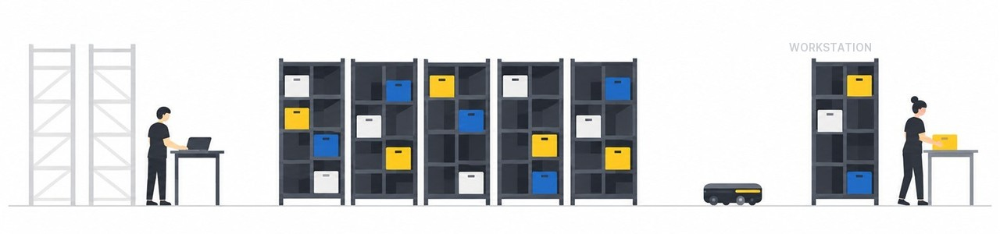
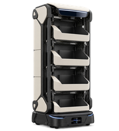
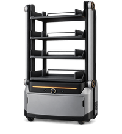
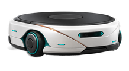
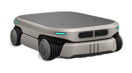

AMR
SOLUTION
현장의 움직임을 데이터로 바꾸는 피지컬 AI
Shelf to Person
PickPort
Order fulfilment for single items or full pallets, at any size and any scale.

Built for
Your Warehouse
Tuned to your floor plan, product range,
and growth goals,
VECTORGRID Shelf-to-Person system
grows smoothly alongside your daily work
and demand cycles.
Flexible
Customisable
Scalable
One system, two ways to set it up.
Quicker, sharper order fulfillment.
-
Shelf-to-Person
Standard ConfigurationShelf-to-Person
PickPort Configuration
-
Description
Quick to install, steady in use
Mobile robots carry whole shelves straight to your pickers. Easy to run, easy to grow and quick to install, it suits warehouses taking a first step into automation with many SKUs.
More orders, tighter storage
This is the step up. A robot arm lifts totes off the shelf and hands them to the workstation, so pickers work faster without climbing a ladder. It is made for busy sites, fast-selling SKUs and sudden seasonal peaks.
-
*Solution Components
-
Picking Workflow
Whole shelf comes to the picker, who picks from the front or side
Standard + robot arm hands over totes automatically, with side picking for small shelves and pallets
-
Shelf Height
Up to 2.8m
Standard + taller shelves, up to 3.7m
-
Storage Density
Modular shelves hold single items, pallets, cartons, laminates and hanging goods
Standard + modular racks packed with totes
-
Slotting & Hit Rate
ABC re-slotting from forecast order volumes; the software reshuffles stock in quiet or idle hours
Standard + slots inside each shelf shift with order data and SKU demand, and are tidied up during idle time
-
Slotting & Hit Rate

Projected light guide and pick-to-light

Standard + robot arm fetches totes on its own, a comfortable layout and room for 3 buffer totes.
-
Ergonomics
No walking at all, with an optional step ladder
Standard + no ladder, picks at a comfortable height, less strain
-
Operational Throughput
Up to 3x hand-picking speed
Standard + more orders per hour, up to 4x speed, better hit rate
-
Use Cases
Easy to run, many SKUs, quick payback
Standard + tight storage, fast sellers, peak loads and easier work for staff
-
Robot Used

KP 시리즈 KP-360R / KP-180A / KP-720X

KP 시리즈 KP-360R / KP-180A / KP-720X
-
Use Cases
Easy to run, many SKUs, quick payback
Standard + tight storage, fast sellers, peak loads and easier work for staff
-
*Use Cases
-
Industries Served
Fashion, retail, online shops, 3PL, electronics, beauty, plus B2B and B2C sellers.
-
Oversized SKU Handling
Handled from the station's side opening
-
Scalability
Add more robots, racks or stations as demand grows
-
*Shared
-
Deployment Time
About 1–2 months, depending on site size
-
Software Platform
Robot scheduling (RMS), task rules (WES), alerts (IOP) and simulation (VG-Studio)
Your One-stop
Partner for
Warehouse
Robotics
Built to Meet
Every Industry Demand
A single system that adapts to any kind of industry.
Every warehouse runs in its own way, so STP is set up around your
floor space, product range and order volume, and it keeps running
smoothly whatever the size, shape or difficulty of the items you handle.
Ready for Every Kind of
Storage in Your Field
Each warehouse is different, which is why STP is shaped by your
space, stock profile and output goals, and it copes easily with
items of any size or shape, even the odd-shaped ones
Fits Every Workflow Step in
Your Industry
Each warehouse task can be run through the VECTORGRID System and
Solution with ease.
FAQ
With STP, shelves travel to the operator instead of the other way round, so far less time is lost walking and each task flows into the next. Orders are picked faster and more accurately, and the warehouse can take on bigger volumes with fewer hold-ups.
Companies that adopt STP usually cut labour costs by as much as 50% and get orders out the door sooner. Using floor space more wisely and picking more quickly add up to real savings, and the gap grows widest when demand reaches its peak.
Yes. STP grows in small steps: you can add shelves, robots or workstations without disrupting work, so the system keeps pace with you whether you launch new product lines or move into new markets.
STP links up with the leading warehouse management (WMS) and enterprise resource planning (ERP) software through ready-made connections, so it slots into the tools you already use and your daily work carries on without interruption.
STP watches its own health: it flags parts that will soon need service, sends an alert the moment an error appears and runs detailed self-checks. VECTORGRID adds ongoing technical support and scheduled preventive care, so the system keeps running day after day without breaks